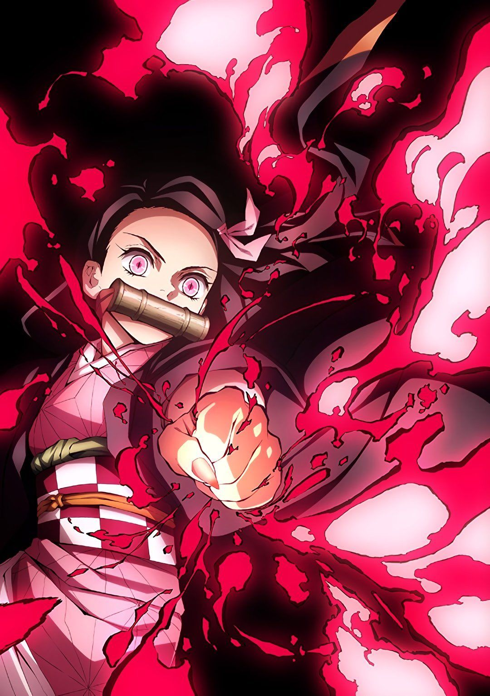
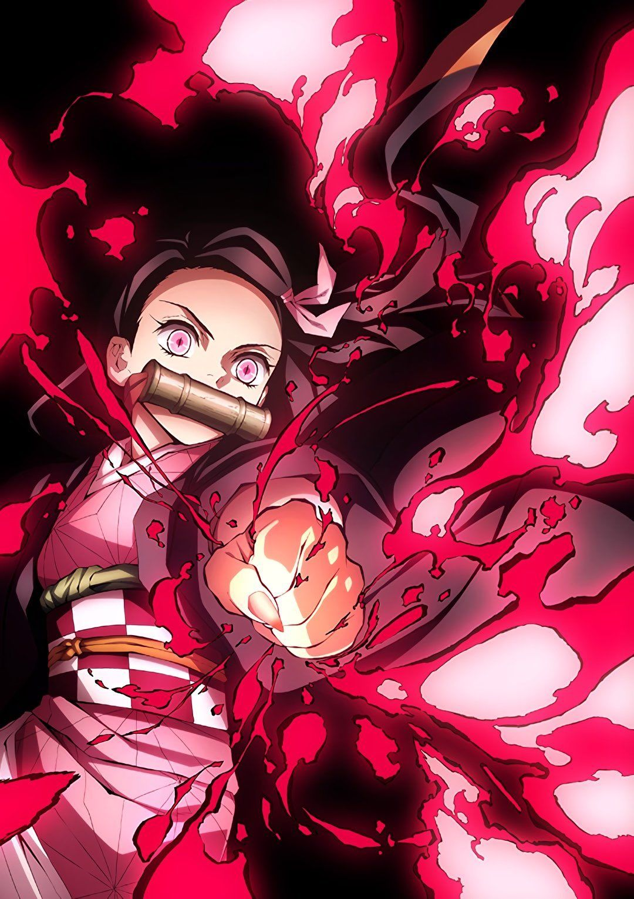

주인공 탄지로의 여동생.
인간 시절, 탄지로는 장남으로서 생계를 책임지기 위해 하루 중 반나절 이상을 집 밖에서 보내야 했으므로 어린 동생들을 보살피는 역할은 거의 네즈코가 전담했다.
또한 바느질이나 나물을 캐러 가기도 했는데, 동생들 보는 일 뿐만 아니라 어머니를 도와 집안일도 선뜻 도와주던 효녀로 살아왔다.
사람은... 지키며, 구해야 할 존재.
상처입히지 않아.
절대로 상처입히지 않겠어
 
